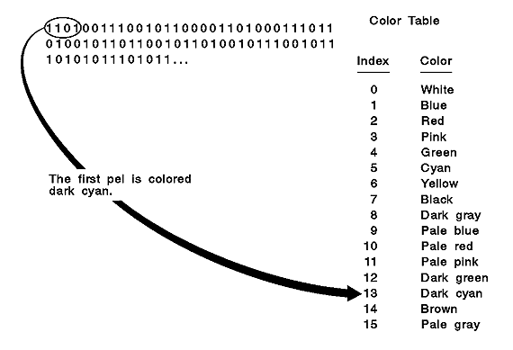

On a monochrome device, you need only one bit to describe a single pel, and that bit is switched on or off. Color devices require more bits. For example, an eight-color picture requires three bits to describe a single pel, because each component of the RGB mix (red, green, blue) that gives a pel its color must be described.
A bit count is a value that specifies how many adjacent bit-map bits correspond to each pel in a bit-map image. There are four standard bit-map formats, each with a different bit count. The formats are shown in the following table.
旼컴컴컴컴컴컴컴컴컴컫컴컴컴컴컴컴컴컴컴컴쩡컴컴컴컴컴컴컴컴컴커 쿑ormat 쿍its per pel 쿞ize of 640 x 480 � � � 쿶mage in bytes � � � �(uncompressed) � 쳐컴컴컴컴컴컴컴컴컴컵컴컴컴컴컴컴컴컴컴컴탠컴컴컴컴컴컴컴컴컴캑 쿘onochrome �1 �38 400 � 쳐컴컴컴컴컴컴컴컴컴컵컴컴컴컴컴컴컴컴컴컴탠컴컴컴컴컴컴컴컴컴캑 �16 color �4 �153 600 � 쳐컴컴컴컴컴컴컴컴컴컵컴컴컴컴컴컴컴컴컴컴탠컴컴컴컴컴컴컴컴컴캑 �256 color �8 �307 200 � 쳐컴컴컴컴컴컴컴컴컴컵컴컴컴컴컴컴컴컴컴컴탠컴컴컴컴컴컴컴컴컴캑 �16.7 million color �24 �921 600 � 읕컴컴컴컴컴컴컴컴컴컨컴컴컴컴컴컴컴컴컴컴좔컴컴컴컴컴컴컴컴컴켸
Note: The bits are stored consecutively in the bit-map plane. If you have four bits for each pel, the four bits for pel 1 are followed by the four bits for pel 2, and so on. The bits that describe pel 1 are stored beginning in the most-significant bits of the first byte. The data for each scan line is packed together, and the bottom scan line appears first in memory with the leftmost pel first. Each scan line, however, is padded at the end so that each line begins on a ULONG (32-bit) boundary.
If the device supports a bit count of one bit per pel, the color table contains two entries. A device that supports a bit count of n bits per pel, has a corresponding color table with 2n entries. However, a bit count of 24 bits per pel indicates that there is no color table, because each pel is a direct RGB value.
The following figure shows a bit map using a bit count of four bits per pel and an associated color table:
A Bit Map and Its Associated Color Table
If a device uses a bit count of one, four or eight bits per pel, the bit-map bits contain index values for a bit-map color table. If the device supports a bit count of 24 bits per pel, the bit-map bits contain the bRed, bGreen, and bBlue fields of RGB2 structures. No color table is associated with a bit map on a device that supports a format of 24 bits per pel-such a device can support over 16 million colors. Instead of using a color table, the BITMAPINFO2 structure consists of only the header, and the red, green, and blue color values are provided directly by the bit-map data.
An application can determine the bit-count format that a device supports by calling GpiQueryDeviceBitmapFormats.